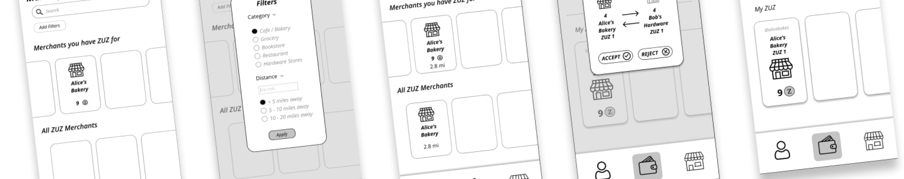
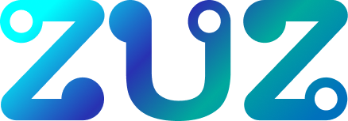
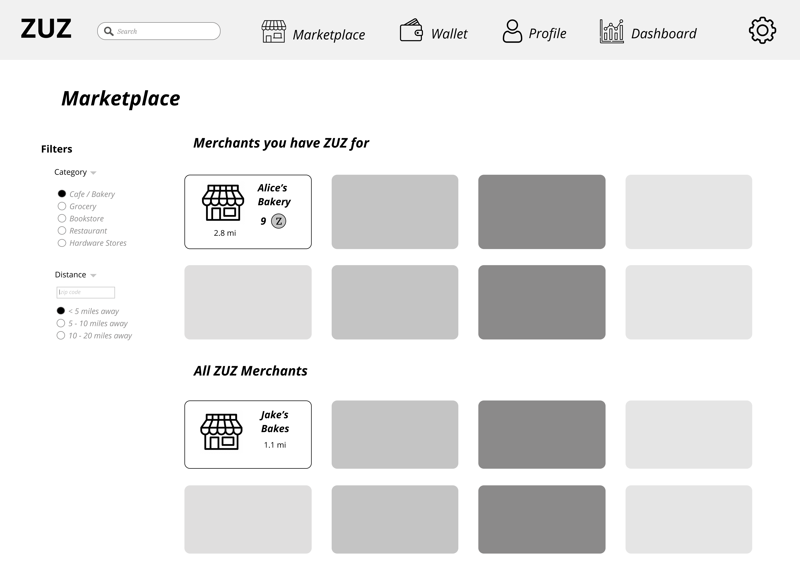
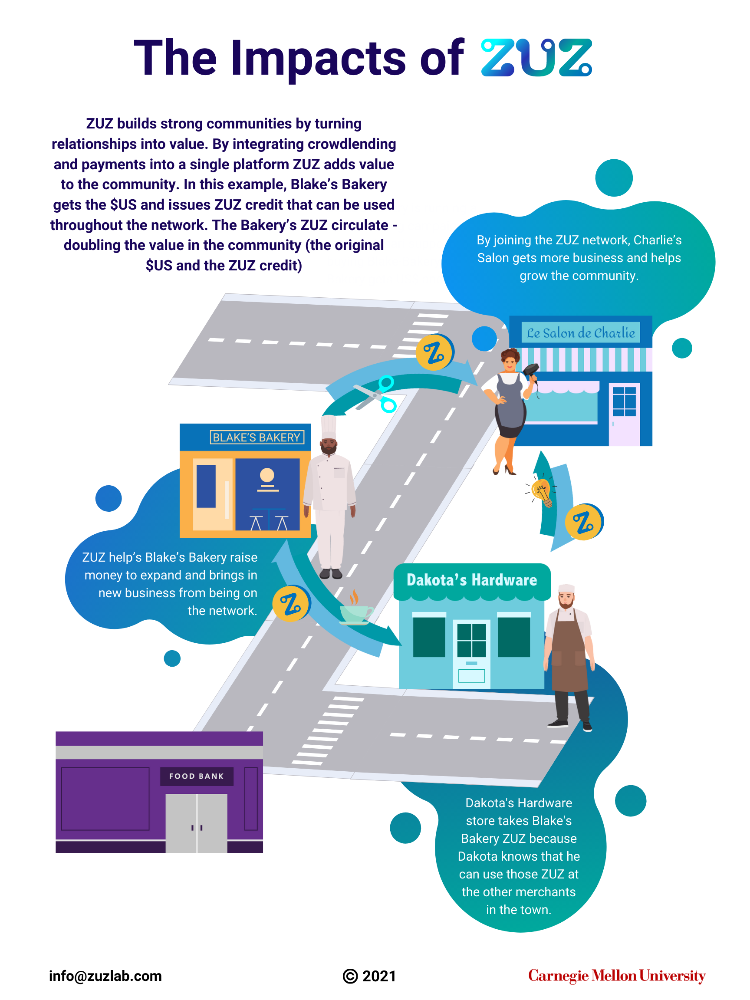

ZUZ
Internship / UI/UX Design
DURATION: February 2021 - Present
COLLABORATOR: Megan Lin
PLATFORMS: iOS, Android, Desktop
ZUZ is a digital platform that increases availability of capital, especially to small and traditionally disadvantaged borrowers. Founded by CMU Professor Seth Goldstein and Lisanne Biolos, ZUZ helps individuals and businesses turn their reputation in a network into cash, providing a means to move up–towards greater financial growth and economic security.
Methods
Wireframing
Prototyping
Usability Testing
Graphic Design
Market Research
Tools
Figma
Canva
Adobe Photoshop
Slack

As a UI/UX Designer for ZUZ, my duties included designing both the mobile and web platforms as well as the layout of the public ledger, taking the variety of membership options, prior research and development, the international deployment plans, and branding guidelines all into consideration. This experience was my first real deepdive into UI/UX design, having to create over 100 wireframes (mobile + desktop) from scratch, with respect to multiple types of user accounts, permission-based views, different functionalities / views depending on the device beyond responsiveness, and feature requests over the last six months.
Parallel Prototyping
My very first task as a part of the ZUZ UI/UX Team was creating a series of wireframes individually given what I had learned about the concept of platform in my first few meetings with the entire team. The company leads then assessed each of our separate sets of wireframes and gave us input that helped inform not only our understanding of the product, but also shed light on how we could consolidate our individual mockups into a singular, comprehensive protoype. Below are my initial wireframes from this parallel prototyping session.
Low Fidelity Wireframing
ZUZ needed to be a responsive platform with varying displays dependent not only on the screen size, but also dependent on the user profile types, the permissions delegated, and the location of the deployment. Given a set of branding guidelines, we began to design low to mid-fidelity wireframes for each user flow / user story provided to us. Every week we would engage in cross-fuunctional meetings and design reviews / critiques that led to an iterative design process in which we would deliver wireframes and continously make edits as more and more features were envisioned and/or use cases were considered. Below are some of the wireframes we created for mobile and desktop.

Graphic Designs
In addition to handling the design of the platform, we were responsible for generating the infographics and visual content that would be used to market the platform. We utilized Canva and the Adobe Creative Suite for our graphic designs, some which are below.
As a UI/UX Designer for ZUZ, my duties included designing both the mobile and web platforms as well as the layout of the public ledger, taking the variety of membership options, prior research and development, the international deployment plans, and branding guidelines all into consideration.
